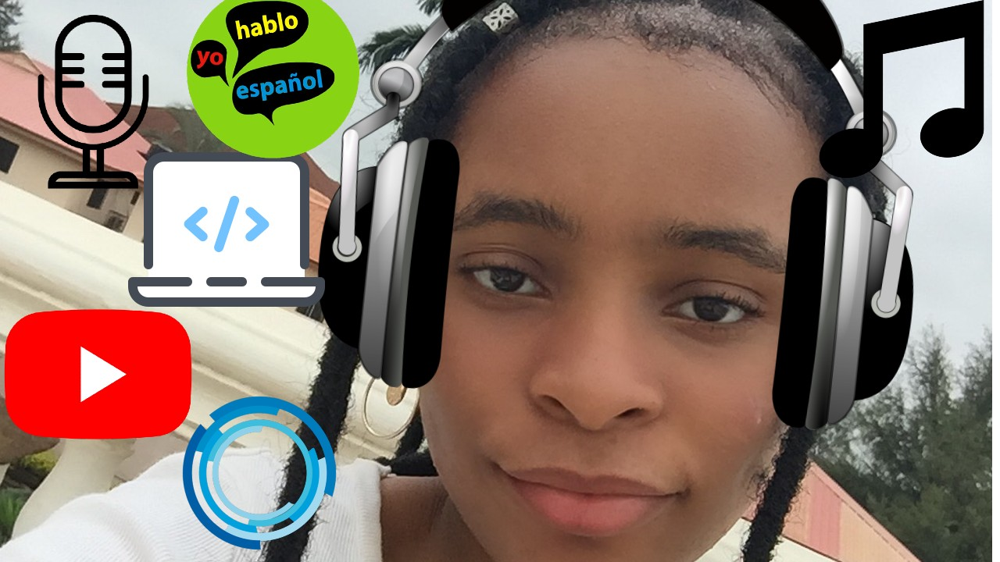

About Me
My name is Joy Jimmy, I am an aspiring singer is currently a resident in London, England but was born in Abuja, Nigeria on September 19, 2005. I have been singing since the age of 6 in mostly school choirs and musical productions. My parents are both Nigerian and trilingual but I speak English I am currently monolingual but can sing in different languages really well, as I am exposing myself to languages such as Mandarin, Spanish and Arabic. And yes, my name is Joy like the hymns and I am always optimistic or joyful.
I love to sing everywhere and anywhere I am always with my headphones I listen to a large variety music from country to R&B. One of my hobbies is listening to music and really understanding the beats and how it is put together, though I am not the best lyricist i try to write once in a while but I prefer to make the music with garage band or bandlab.
Hobbies
My hobbies are netball I love netball, and recently got into yoga and meditation which I absolutely love it is so calmy and it helps me to take time to think about myself Like I mentioned earlier I love to listen to music and sing I could spend hours listening to music, singing and dancing. I enjoy coding it really helps me to think outside the box coding has thought me to take my time and find solutions to problems even in my everday life.
Culture
I am proud to be Nigerian and African one thing unique about me is I have experienced different cultures living in both Nigeria and England and I have learned to adapt to both cultures and I adore both cultures they have both taught me a lot and have made me who I am today and I would never change that.